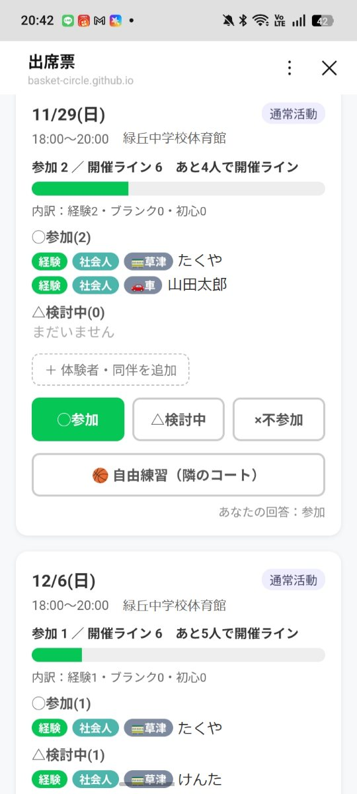
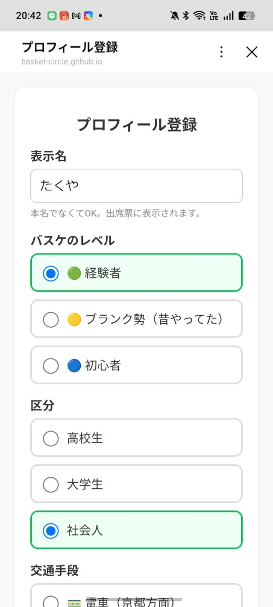

🏀 サークル出欠アプリの紹介
社会人バスケサークルの「今週、誰が来るか」を LINE だけで記入・確認できるようにした自作アプリです。前半で画面と使い方を、後半で裏側のしくみ（使っている言語・サービス・データの持ち方）を紹介します。
画面写真に写っている名前・サークル名・会場名はすべて架空のものに差し替えています。運営者だけが使う管理画面は、この資料では扱いません。
1. 画面と使い方
メンバーが触るのは、LINE 公式アカウントのトーク画面と、そこから開く3つの画面（出席票・プロフィール登録・今後の予定）だけです。新しくアプリを入れる必要はありません。
1-1. 入口は LINE 公式アカウント

下のメニューがすべての入口
- 出席票：活動日ごとに出欠を記入し、参加者の顔ぶれを見る
- 今後の予定：先の活動日を一覧で見る
- プロフィール：表示名やレベルを登録する（最初の1回だけ）
- チャット：メンバー同士のグループ（LINE のオープンチャット）を開く
出席票・予定・プロフィールの3つは、LINE の中で開く Web 画面（LIFF）です。チャットは LINE 標準の機能にリンクしているだけで、こちらで作ったものではありません。
トークには、活動が近づくと「次回の活動のお知らせ」と「出欠カード」が自動で届きます（1-4 で説明）。写真の上端に見えているのは、中止のお知らせの末尾です。
1-2. 出席票


活動日ごとに1枚のカード
- 日付、種別（通常活動／練習試合／イベント）、時間と会場。練習試合なら相手チーム名が青字で入る
- 参加人数と開催ライン（この人数が集まれば開催、の目安）と進捗バー
- 参加者の名簿。1人ずつ 経験ブランク初心 のレベル、高校大学社会人 の区分、🚗車🚃草津 などの交通手段が付く
- 検討中の人の名簿。隣のコートで自由練習をする人がいれば、その名簿も別枠で
ボタンひとつで回答
- ◯参加／△検討中／×不参加 を押すだけ。押した瞬間に名簿と人数が書き換わる
- 通常活動とイベントの日は 🏀 自由練習（隣のコート） も選べる。これは本体の人数には数えない
- 不参加は他の人には見えない。名簿に載るのは参加・検討中・自由練習だけで、不参加は右下の「あなたの回答」にだけ出る
- ＋ 体験者・同伴を追加：LINE を持っていない人（体験に来る友人、親子参加のお子さんなど）を、連れてくる人が代わりに名簿へ入れられる。人数にも数える。消せるのは追加した本人だけ
- プロフィールを登録していない人も回答できる。名簿には「未登録」の灰色バッジで載り、画面の上に登録のお願いが出るだけ
1-3. プロフィール登録

最初の1回だけ
- 表示名（本名でなくてよい）、レベル（経験者／ブランク勢／初心者）、区分（高校生／大学生／社会人）、交通手段（電車2方面／車／自転車／徒歩）の4つ。年齢は聞かない
- 表示名には LINE の名前が最初から入っている。登録済みなら前回の内容が入った状態で開くので、直したいところだけ変えればよい
- ここで登録した内容が、出席票と出欠カードのバッジになる
はじめて登録したときだけ起きること
- 本人の発言として「プロフィールを登録しました！登録名は「◯◯」です。よろしくお願いします☺」がトークに送られる。運営側のチャット一覧に本人が現れるので、個別に連絡できるようになる
- 画面が閉じてトークに戻ると、「💬 最後のお願い」というカード（グループLINE に参加するボタン付き）が届く
1-4. 自動で届くお知らせと出欠カード


次回の活動のお知らせ（6日前が基本）
- 日時、会場、通常活動以外なら［練習試合］［イベント］の種別、名称があれば青の太字で
- 「出席したい人は、早めに出欠の記入をお願いします😊」と、出席票を開くボタン
出欠カード（3日前）
- その時点の参加人数と開催ライン、◯参加と△検討中の名簿、隣のコートの自由練習の名簿。バッジは出席票と同じ
- 締切（活動の2日前）までは「まだの人は M/d(曜)までに、回答済みの人も変更があればお願いします🙏」の一文が付く
- ボタンは出席票を開くものが1つだけ。回答は出席票で行う
中止のお知らせ（運営が送る）
- 「⚠️【中止のお知らせ】M/d(曜) HH:mm〜HH:mm の活動は中止です🙏」に、運営が書いた理由が1行付く
- 中止したのが次回の活動なら「また次回、よろしくお願いします😊」、隣のコートの自由練習に人がいれば「※隣のコートの自由練習も、あわせて中止です。」が自動で付く
お知らせ・カードは LINE の「Flex Message」というカード型のメッセージです。静止画ではないので、文字がそのまま読めてボタンも押せます。
1-5. 今後の予定
公開中の活動を上から順に並べた、見るだけのページです。各行に日付、種別（お休みも含む）、名称、時間と会場、◯参加と△検討中の名前、自由練習の名前が出ます。お休みの回は日付と種別だけです。出席票と同じデータを、バッジを付けずに短くまとめた形です。
1-6. はじめて友だち追加したときの流れ
- 公式アカウントを友だち追加すると、「◯◯さん、はじめまして。友達登録ありがとうございます☺／まずは、プロフィールの登録をお願いします。最初の1回だけです。」と、登録画面を開くボタンが届く。以前に登録したことがある人には「おかえりなさい☺」だけが返る。
- ボタンからプロフィールを登録する。本人の発言が送られ、「💬 最後のお願い」カードが届く。
- カードのボタンからグループLINE に参加して、準備は終わり。
普段のメッセージには自動では返事をしません（運営が手で返します）。運営が「管理者不在モード」を ON にしている間だけ、不在の案内とチャットへのボタンを自動で返します。
2. しくみの全体像
矢印はデータの流れ。緑＝画面からの問い合わせ、橙＝公式アカウントからの配信、青＝シートの読み書き。スマホでは図を横にスクロールできます。
流れをまとめると
- 画面は GitHub Pages に置いた静的な HTML。LIFF のしくみで LINE の中に開き、LINE から利用者の ID と表示名を受け取る。
- サーバ役は Google Apps Script（GAS）1本。画面からは「操作名＋利用者 ID」付きの GET で呼ばれ、LINE からは Webhook（POST）で呼ばれる。
- データはスプレッドシート。GAS がシートを読み書きし、必要なときに LINE の Messaging API で全員にメッセージを配る。
- 自動配信は GAS の時間トリガー。毎朝1回、活動日の一覧を見て「お知らせ」「出欠カード」を送るかどうか決める。
画面を GAS に置かず GitHub Pages に分けているのは、GAS の画面機能（HtmlService）が sandbox の iframe で動くため LIFF の初期化が終わらないからです。そのため画面と GAS の間は JSONP（JavaScript を <script> タグで読み込む形）で通信しています。
3. 使っている言語・サービス・ツール
| 役割 | 使っているもの | 言語・形式 | 補足 |
|---|---|---|---|
| 画面 | GitHub Pages（静的ホスティング） | HTML／CSS／JavaScript | 出席票・今後の予定・プロフィール登録の3ファイル。フレームワークやビルドは使わず、1ファイルで完結。LIFF SDK を読み込んで LINE と連携 |
| サーバ | Google Apps Script | JavaScript（GAS） | Web アプリとして公開し、GET／POST を受ける。時間トリガーで定期実行もここ |
| データ | Google スプレッドシート | 表（1シート＝1テーブル） | データベース代わり。人の手でも直せるのが利点 |
| LINE との連携 | Messaging API／LIFF／リッチメニュー／オープンチャット | Flex Message（JSON） | 配信・Webhook は Messaging API、画面の表示と利用者の識別は LIFF。チャットはオープンチャットをそのまま利用 |
| 開発・反映 | Git／GitHub、clasp（GAS のコードを PC から上げるツール） | — | 画面は push で公開。GAS は push のあと「デプロイ」で新しい版を公開 |
| 費用 | サーバ代は0円。上のサービスはすべて無料枠の範囲で動いている | ||
利用者の識別は、すべて LINE の userId（1人に1つ振られる ID）で行います。画面を開くための LIFF と、メッセージを配る Messaging API が同じプロバイダーに属しているので、両方で同じ ID が使えます。登録・出欠・ゲストの紹介者は、この ID で結びついています。
4. データの持ち方
1つのスプレッドシートの中に、次のシートを置いています。活動日のシートは運営が直接編集することもあり、日付を入れると ID が自動で振られます。
活動日 … 1行＝1回の活動
| 項目 | 内容 |
|---|---|
| イベントID | 「EV-20261129」の形。日付から自動で振る |
| 日付／開始／終了 | 活動の日と時間帯 |
| 会場 | 空欄ならいつもの体育館 |
| 種別 | 通常活動／練習試合／イベント／お休み の4択 |
| 開催ライン | この人数が集まれば開催、の目安。回ごとに変えられる |
| 公開 | チェックボックス。OFF の回は出席票にも予定にも自動配信にも出ない（下書きや会場未定の週を隠せる） |
| 名称 | 任意。イベント名や対戦相手など |
メンバー … 1行＝1人
| 項目 | 内容 |
|---|---|
| LINEユーザーID | この行の主キー |
| 表示名／レベル／区分／交通手段 | プロフィール登録画面で入力したもの |
| 登録日時 | 登録・更新のたびに上書き |
| 写真 | 運営だけが使う印（SNS に顔を出したくない人）。メンバー向けの画面には出さない |
出欠 … 1行＝「ある活動への、ある人の回答」
| 項目 | 内容 |
|---|---|
| イベントID／LINEユーザーID | この組み合わせで1行。同じ人が同じ回に答え直したら上書き |
| 状態 | 参加／検討中／不参加／自由練習 の4値。1人につき1つ |
| 更新日時 |
ゲスト … 体験者・同伴の人
| 項目 | 内容 |
|---|---|
| ゲストID | 追加のたびに自動で振る |
| イベントID | その回だけの登録。来る日にその都度追加する |
| ゲスト名／レベル | 追加した人が入力 |
| 紹介者ID | 追加したメンバーの ID。削除できる人の判定と「（◯◯さんの紹介）」の表示に使う |
| 種別 | 体験／同伴。同伴は LINE を持たない家族（親子参加のお子さんなど） |
そのほか
- 友だち：画面や LINE から見かけた userId と初回日時を控えておくだけのシート。
- 管理者：運営画面を使える人の userId。この資料では省略。
- LINE の access token などの秘密情報はシートには置かず、GAS の設定領域（スクリプトプロパティ）に入れています。
5. 画面とサーバのやり取り
画面は「操作名」と「利用者の userId」をクエリに付けて GAS を呼びます。GAS は JSON を返し、その中に 成功したか・データ・サーバ内部で何ミリ秒かかったか が入っています。最後の所要時間は、遅いときにどこが遅いかを切り分けるために常に付けています。
| 操作 | 送るもの | サーバがすること | 使う画面 |
|---|---|---|---|
| 出席票を開く | userId | 公開中の活動一覧（名簿・人数つき）と、その人のプロフィールを1回でまとめて返す | 出席票 |
| 活動一覧だけ取る | userId | 上の活動一覧の部分だけ | 出席票の読み直し、今後の予定 |
| 出欠を記入する | userId、イベントID、状態 | 出欠シートの該当行を上書き（無ければ追加） | 出席票 |
| 体験者・同伴を追加する | イベントID、名前、レベル、種別、userId | ゲストシートに追加して、ゲストIDを返す | 出席票 |
| 体験者・同伴を消す | ゲストID、userId | 紹介者が一致するときだけ行を削除 | 出席票 |
| プロフィールを読む | userId | メンバーシートのその人の行 | プロフィール登録 |
| プロフィールを保存する | userId、表示名、レベル、区分、交通手段 | メンバーシートに上書きか追加。新規だったかどうかも返す | プロフィール登録 |
| 登録後の案内を送る | userId | 「最後のお願い」カードをその人に送る（直近10分以内に登録した人だけ） | プロフィール登録 |
このほかに運営画面用の操作があります（省略）。POST を使うのは LINE からの Webhook と、運営画面からの PDF 保存だけです。
出席票を開いて「参加」を押すまで
- LIFF を初期化し、ログインしていなければ LINE のログインへ。ログイン済みなら userId と表示名を受け取る。
- 「出席票を開く」を1回呼び、活動一覧と自分のプロフィールを受け取って描画する。プロフィールが無ければ登録のお願いを出す。
- 「◯参加」を押す。画面はすぐに自分を参加の名簿へ移し、人数とバーを計算し直す。保存はその裏で行う。
- GAS は同時書き込みを防ぐロックを取り、出欠シートの該当行を上書き（無ければ追加）し、読み取り用のキャッシュを捨てる。
- 失敗の返事が来たときだけ警告を出し、活動一覧を取り直す。
出席票のカード1枚ぶんとして画面が受け取るもの
| 区分 | 中身 |
|---|---|
| 活動の情報 | イベントID、日付、名称、時間、会場、種別、開催ライン |
| 参加の名簿 | 1人ごとに 表示名・レベル・区分・交通手段・自分かどうか。体験者・同伴は 名前・レベル・種別・誰が追加したか |
| 検討中の名簿／自由練習の名簿 | 同じ形 |
| 人数 | 参加人数、検討中の人数 |
| 自分の回答 | 参加／検討中／不参加／自由練習／未回答。不参加が入るのはここだけで、名簿には含めない |
6. 自動配信の決まり
GAS の時間トリガーで毎朝9時台に1回処理が動き、活動日シートの「公開 ON かつ お休み以外」の行を見て、今日送るものがあるか判定します。送り先は公式アカウントの友だち全員（broadcast）です。
| メッセージ | いつ送るか | 中身 |
|---|---|---|
| 次回の活動のお知らせ | 「前回の活動の翌日」と「6日前」の遅いほう。それが3日前以降になるとき（活動の間隔が4日以下）は送らず、出欠カードに任せる | 日時・会場・種別・名称、記入のお願い、出席票を開くボタン |
| 出欠カード | 活動の3日前（日曜の活動なら木曜） | 人数と開催ライン、名簿、締切（2日前）の案内、出席票を開くボタン |
| 中止のお知らせ | 運営が手で送る | テキスト（1-4 参照） |
「前回の活動」は、公開かつお休み以外の活動日のうち直前のもの。間隔が短い週に、前回の活動より先にお知らせが出てしまうのを防ぐための決まりです。
7. 人数の数え方と見せ方の決まり
| 項目 | 決まり |
|---|---|
| 参加人数 | 状態が「参加」のメンバー ＋ その回のゲスト（体験・同伴）全員 |
| 開催ライン | 活動日シートの値。残り人数 ＝ 開催ライン − 参加人数。0以下で「開催ライン到達！」。進捗バーは 参加人数 ÷ 開催ライン（上限100%） |
| 検討中・自由練習 | 名簿には出すが、参加人数と開催ラインには数えない（自由練習は「※別集計」と明記） |
| 不参加 | 記録はするが、本人の「あなたの回答」以外には出さない |
| 自由練習のボタン | 種別が通常活動かイベントの日だけ出す（隣のコートが使える日）。練習試合の日は出さない |
| 内訳 | 参加名簿のレベル別人数。体験・同伴もレベルに含めたうえで「（うち体験◯・同伴◯）」を添える |
| 名簿の並び | 出欠シートの行順（＝先に答えた順）。ゲストは末尾 |
| 出す活動 | 公開 ON かつ今日以降、日付順。過去の回は出さない |
| 締切 | 活動の2日前。カードの文言に使うだけで、過ぎても記入はできる |
8. 遅さ・不安定さへの対策
GAS の Web アプリは「作った人として実行」で公開しているため、誰がアクセスしても同じ利用者の実行として扱われ、同時アクセスが1件ずつ順番に処理されます。シートを読むのに2〜3秒かかると、同時に開いた人数ぶん待ち時間が積み上がります。そこで次のようにしています。
- 読み取り用のデータをキャッシュする。活動・メンバー・出欠・ゲストを整形済みの JSON にして GAS のキャッシュに7分置く。載せるのは今日以降の公開分だけ（容量上限が1件100KB のため）。
- 5分ごとにキャッシュを作り直す。メンバーが開いたときには、ほぼ必ずキャッシュがある状態にしておく。シートを読む処理が 2〜3秒 → 0.1秒以下になった。
- 書き込んだらキャッシュを捨てる。出欠・ゲスト・プロフィールの保存、活動日の編集のあとはすぐ捨てる。アプリ経由の変更は即反映され、古く見えるのは運営がシートを直接手で書き換えたときだけ（最大5分）。
- 開くときの通信は1本。活動一覧とプロフィールをまとめて取る。2回目以降は前回の userId を端末に覚えておき、LINE の初期化を待たずに問い合わせを始めて並行させる（受け取った ID が違えば取り直す）。
- 長めに待ち、やり直すのは中断のときだけ。タイムアウト25秒。10秒たったら「通信が混み合っています」と文言を変える。やり直すのは通信そのものが中断されたときだけ1回で、時間切れではやり直さない。体験者の追加は二重登録になるのでやり直さない。
- 押した瞬間に画面を進める。出欠ボタン、体験者・同伴の追加と削除は先に画面を書き換え、通信は裏で待つ。
- 書き込みは排他する。同時書き込みはロックで直列にし、送信中はその活動のボタンを無効にして連打を防ぐ。
- 応答にサーバ内部の所要時間を載せる。内部が短いのに往復が長ければ Google 側の待ち、内部も長ければ自分たちのシート読みが原因、と切り分けられる。
9. あえてそうしていること
- メンバーの手軽さを最優先にしている。インストール不要、記入はボタン1つ、プロフィールは1回だけ。少しでも手間があると続かない、という経験から。
- 不参加は見せない。来ない人が責められている感じにならないように。
- 年齢は聞かない。表示名は本名でなくてよい。
- 本人確認は LINE の userId を信用するだけ。画面が LIFF から受け取った ID をそのまま送り、サーバはそれを本人として扱う（ID トークンの検証はしていない）。サークル内の出欠票という用途に合わせたやり方。
- 通信は JSONP（GET）。失敗の検知は読み込みエラーとタイムアウトだけで、HTTP のステータスは見えない。
- 速さの限界は GAS 側にある。Google の受付だけで往復1.2〜1.7秒かかり、時間帯によってはさらに詰まる。アプリ側でできる高速化は 8 で打ち止め。それでもスプレッドシート＋GAS にしているのは、運営者が代わってもシートを見れば直せること、名簿を第三者のサーバに置かないこと、費用0円を優先しているから。
- 公開リポジトリに個人情報を置かない。名簿はシートにしか無く、画面は API の応答で受け取るだけ。運営用の書類の保存先なども HTML には書かず GAS から渡す。
- 出欠カードのボタンは「出席票を開く」1つだけ。カードは画面より縦に長く、カード上で回答すると結果の返信がカードの下に隠れて見えない。出席票なら全画面で結果が分かり、自由練習や体験者の追加も同じ画面でできる。
10. ファイルと公開のしかた
| 置き場所 | ファイル | 中身 |
|---|---|---|
| GitHub Pages | attendance.html／schedule.html／profile.html | 出席票／今後の予定／プロフィール登録。それぞれ HTML・CSS・JavaScript が1ファイルに入っている |
admin.html／menu-maker.html | 運営画面／リッチメニュー画像の生成（省略） | |
| Google Apps Script | LINE 連携 | GET／POST の受け口、LINE API の呼び出し、友だち追加時の案内 |
| 出欠・プロフィール・ゲスト | シートの読み書き、活動一覧の組み立て、キャッシュ | |
| 配信 | Flex Message の組み立て、自動配信の判定、中止のお知らせ |
反映のしかた
- 画面：Git で push すれば GitHub Pages に反映される。LINE の中のブラウザは HTML を強くキャッシュするので、LIFF に登録した URL の末尾の
?v=Nを1つ上げて読み直させる。 - サーバ：clasp でコードを上げたあと、Web アプリの新しい版をデプロイする（デプロイしないと公開 URL に反映されない）。
- 順番：サーバに新しい操作を足すときは、GAS のデプロイ → 画面の push の順。逆にすると全員の画面が通信エラーになる。
- 動作確認：配信は「自分だけに送る」テスト用の処理を GAS のエディタから実行して見た目を確かめる。本番の配信は全員に届くので試しには使わない。